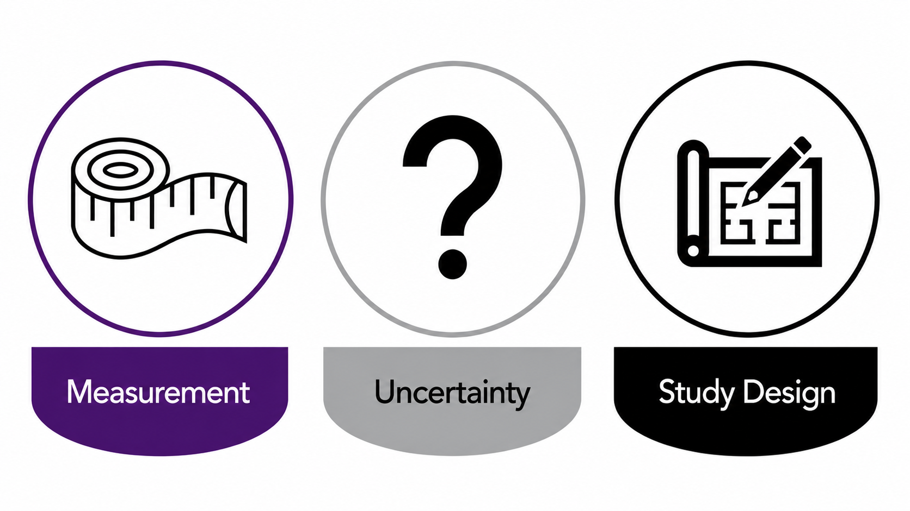
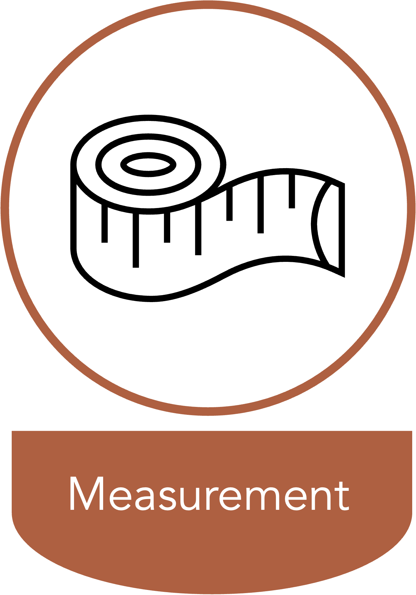
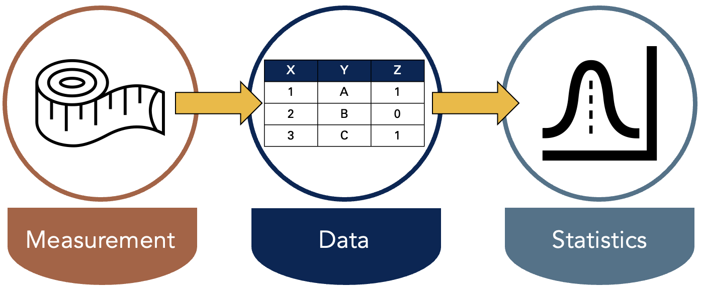
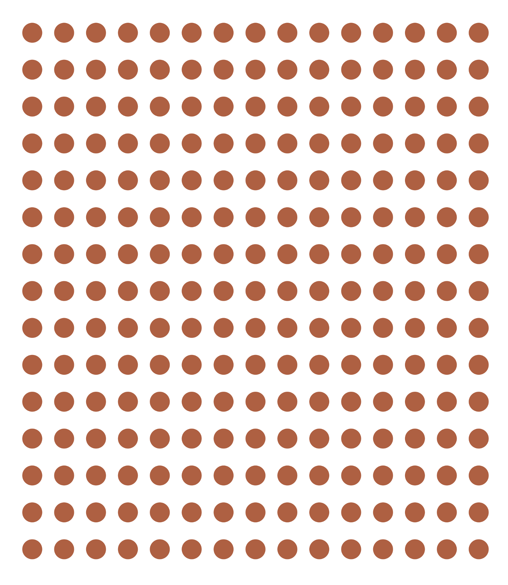
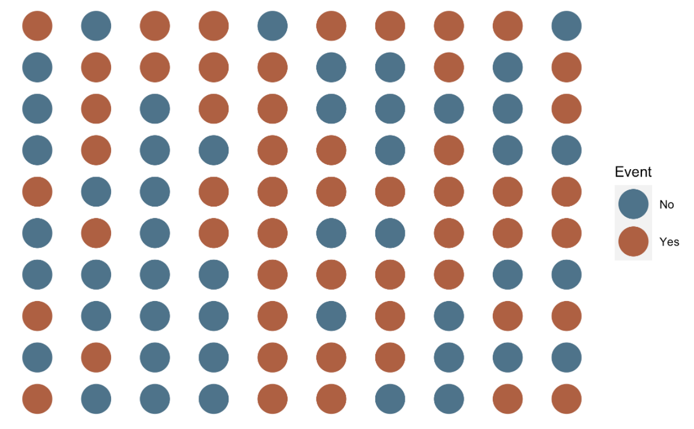
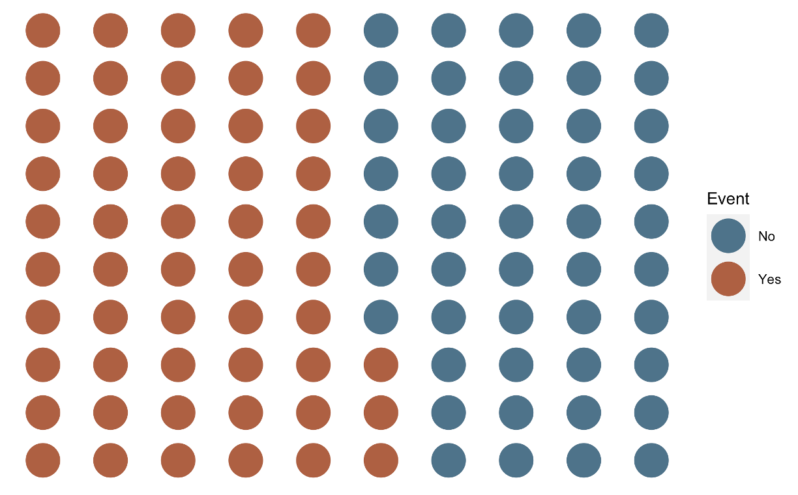
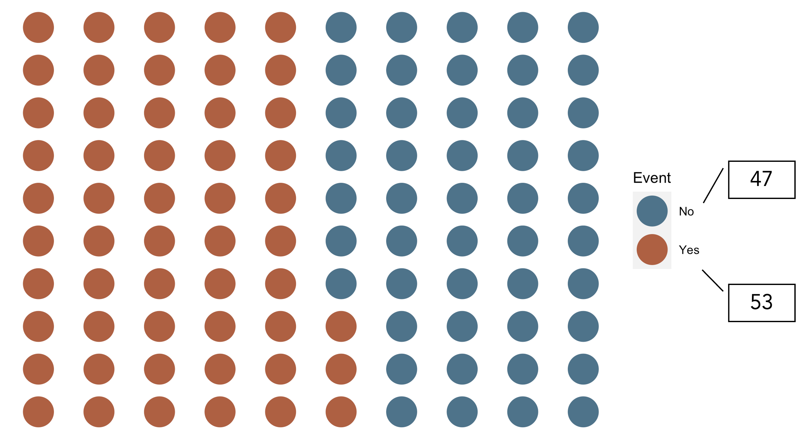

Measures of Disease Occurrence - Part 1
APHS 20203 • Epidemiology & Biostatistics
Course Learning objectives
- Define epidemiology and key associated terminology, especially confounding.
- Distinguish among association, prediction, and causation.
- Explain the Rothman model of sufficient-component causes (RMSCC) and the concept of multifactorial causation.
- Explain the limitations of anecdotal evidence in drawing epidemiologic conclusions.
- Explain why disseminating risk information is sometimes necessary but rarely sufficient to improve population health.
Lecture Learning objectives
By the end of this lesson, you’ll be able to:
- Define counts and rates.
- Distinguish crude, specific, adjusted rates.
- Compute and interpret prevalence and incidence.
Measurement, Uncertainty, and Study Design

What is Epidemiology?
Epidemiology is concerned with the distribution and determinants of health and diseases, morbidity, injuries, disability, and mortality in populations. Epidemiologic studies are applied to the control of health problems in populations (Quinlan 2025).
Measurement Makes Characteristics Observable

Epidemiology is concerned with the distribution and determinants of health and diseases, morbidity, injuries, disability, and mortality in populations. Epidemiologic studies are applied to the control of health problems in populations (Quinlan 2025).
- Observe and assign values to relevant characteristics.
- Look for patterns among those values.
What Does It Mean to Observe?
Epidemiology is concerned with the distribution and determinants of health and diseases, morbidity, injuries, disability, and mortality in populations. Epidemiologic studies are applied to the control of health problems in populations (Quinlan 2025).
- Observe and assign values to relevant characteristics.
- Look for patterns among those values.
OBSERVE
“To be aware of” or “have knowledge about.”
Measurement Produces Data; Statistics Finds Patterns

Description, Prediction, and Causation
DESCRIPTION
PREDICTION
CAUSATION
Description Does Not Necessarily Seek Associations
- Description examines distributions of single variables: middle, spread, shape, count, and proportion.
- It supports resource management and planning.
- Examples:
- How many ventilators are available in Texas?
- What is the average age of people living in Florida?
- How much time elapses, on average, between exposure to a pathogen and the occurrence of disease symptoms?
Description Can Also Compare Distributions
- Sometimes description does look for associations.
- It may compare distributions of single variables within levels of another variable.
- Examples:
- Are more ventilators available in Texas or New York?
- Are people older, on average, in Florida or Pennsylvania?
- Is symptom onset quicker, on average, for cholera or E. coli?
Measures of Occurrence Support Description
- Counts
- Incidence
- Prevalence
- Odds
These measures can be useful on their own and for hypothesis generation.
Sources of Uncertainty: Few Checklists
- Few checklists
Sources of Uncertainty: Add Statistical Uncertainty
- Few checklists
- Statistical uncertainty
Sources of Uncertainty: Add Causal Uncertainty
- Few checklists
- Statistical uncertainty
- Causal uncertainty
Occurrence Is Defined Within Populations
Epidemiology is concerned with the distribution and determinants of health and diseases, morbidity, injuries, disability, and mortality in populations. Epidemiologic studies are applied to the control of health problems in populations (Quinlan 2025).
Population
The simplest definition of a population is a group of people who share characteristics or meet criteria that define membership in the population (Lash et al. 2021).

A Population Also Has a Time Period
The simplest definition of a population is a group of people who share characteristics or meet criteria that define membership in the population [during a defined time period] (Lash et al. 2021).
Counts (n): Events in a Population

Counts (n): Group the Event Categories

Counts (n): Reveal the Totals

Prevalence Describes Existing Conditions
- Prevalence provides information about the presence or absence of a condition of interest, such as a disease, exposure, or characteristic, in a population.
- It describes the extent to which the condition is present in a population during a given time frame.
- Asking about the prevalence of diabetes means asking how many, or more likely what proportion, of people currently living in the population have diabetes.
Source: (Westreich 2019)
Prevalence Count
- A count of people in a population with the condition of interest during a given time frame.
- As few as 0 people and as many as all people can be living with the condition.
- Range: 0 to infinity.
Source: (Westreich 2019)
Prevalence Proportion
- The proportion or percentage of the population that presently has the condition of interest or presently has a history of the condition during a specified period, such as a history of cancer in the past 10 years.
- Since none, some, or all population members can have the condition or a history of it, prevalence proportion ranges from 0 to 1, much like a probability.
Source: (Westreich 2019)
Prevalence Proportion: Formula
\[ \text{Prevalence proportion} = \frac{\text{Count with the condition}}{\text{Living members of the population}} \]
Follow-Up Experience for 10 People

Prevalence Proportion at Month 2

\[ \frac{\text{Count with the condition}}{\text{Living members of the population}} \]
\[ = \frac{2}{10} = 0.20 = 20\% \]
Interpreting Prevalence Proportion
Among the members of the population, the prevalence of disease in month 2 was 0.20.
Said another way, 20% of the population had disease in month 2.
Point Prevalence and Period Prevalence
- Point prevalence: prevalence of a condition of interest at a single point in time.
- Period prevalence: prevalence of a condition of interest over a period of time.
- As the duration of the period shrinks, period prevalence converges to point prevalence.
- There is no hard-and-fast rule for what window is sufficiently short to count as point prevalence.
Source: (Westreich 2019)
Prevalence Odds
- Prevalence odds is a simple function of prevalence proportion, just as odds in general is a simple function of probability.
- It is typically reported for convenience or desirable statistical properties.
- Prevalence odds is prevalence proportion divided by 1 minus prevalence proportion.
- Range: 0 to infinity.
Source: (Westreich 2019)
Prevalence Odds: Formula
\[ \text{Prevalence odds} = \frac{\text{Prevalence proportion}}{1 - \text{Prevalence proportion}} \]
Prevalence Odds at Month 2
\[ \frac{\text{Prevalence proportion}}{1 - \text{Prevalence proportion}} \]
\[ \text{Prevalence odds} = \frac{0.20}{1 - 0.20} = 0.25 \]
Interpreting Prevalence Odds
Among the members of the population, the odds of disease in month 2 were 0.25.
For every person who had disease at month 2, there were four people who did not.
Questions?
What questions do you have?